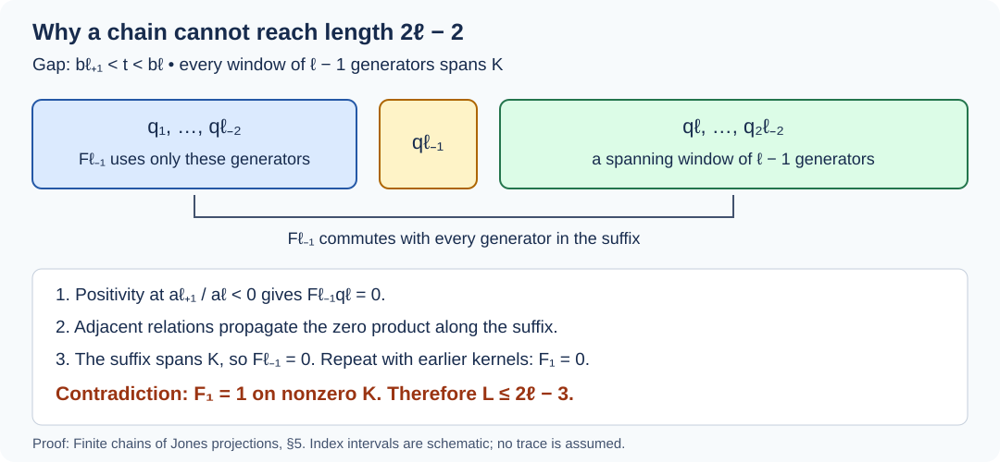

Finite chains of Jones projections
How long can projections satisfying the Jones relations persist at a parameter between the permitted infinite-sequence values? The obstruction already occurs in a finite chain. We prove a length bound using positivity and joint kernels; no trace or finite-dimensional representation is assumed.
The finite bound, polynomial identities, stabilization conclusions and source-index corrections already have complete programme proofs in Polynomials locate the finite projection gaps, Proposition 42.1, Corollary 42.2, Lemmas 42.3–42.5 and Theorem 42.6. That lesson proves the bound by compressing to a tail with orthogonal distant projections. The present lesson gives an alternative proof through spanning windows and cancellation, and retains a direct derivation of the intermediate formulas.
The earlier algebraic recursion is in Positivity restricts the index, Lemma 7.1, and The range of the index of an expectation, §3. Why the discrete projection algebra is unique, Proposition 13.6, proves the infinite-sequence restriction without a trace. The source statements compared in both finite-chain lessons are Takesaki, Theory of Operator Algebras III, §XIX.2, Lemmas 2.18–2.21, pp. 428–432.
Relations, support and the parameter
Let \(q_1,\ldots,q_L\) be orthogonal projections on a Hilbert space, with at least one nonzero projection, satisfying
\[ q_iq_j=q_jq_i\quad(|i-j|\ge2),\qquad q_iq_{i+1}q_i=tq_i,\qquad q_{i+1}q_iq_{i+1}=tq_{i+1}, \tag{FJC1} \]where \(t>0\). Assume \(L\ge2\). Every projection is nonzero: a zero projection forces its neighbors to vanish, and induction reaches both endpoints. Since \(q_iq_{i+1}q_i\le q_i\), a nonzero vector in the range of \(q_i\) gives \(t\le1\).
Put
\[ \delta=t^{-1/2},\qquad U_i=\delta q_i. \]Then
\[ U_i^*=U_i,\quad U_i^2=\delta U_i,\quad U_iU_{i+1}U_i=U_i,\quad U_{i+1}U_iU_{i+1}=U_{i+1}. \tag{FJC2} \]The distant generators commute. These identities follow by substituting \(t=\delta^{-2}\) in (FJC1).
We may restrict the Hilbert space to
\[ K=\overline{\operatorname{span}}\{\operatorname{ran}q_i:1\le i\le L\}. \]Indeed, \(K^\perp=\bigcap_i\ker q_i\); each projection vanishes there and preserves \(K\). Restriction preserves (FJC1) and nonzero projections. On \(K\), a bounded operator that annihilates every \(\operatorname{ran}q_i\) vanishes by continuity. We use this nondegenerate representation below. The identically zero chain is excluded throughout.
The polynomials and their first sign change
Define
\[ \begin{gathered} a_0=0,\quad a_1=1,\quad a_{n+1}=\delta a_n-a_{n-1},\\ P_0=P_1=1,\quad P_{n+1}(t)=P_n(t)-tP_{n-1}(t). \end{gathered} \tag{FJC3} \]Induction gives
\[ P_n(t)=\delta^{-n}a_{n+1}. \tag{FJC4} \]If \(\alpha+\beta=1\) and \(\alpha\beta=t\), the polynomial \(\sum_{j=0}^n\alpha^{n-j}\beta^j\) has the same initial values and recurrence as \(P_n\). Consequently
\[ P_n(t)= \begin{cases} (\alpha^{n+1}-\beta^{n+1})/(\alpha-\beta),&\alpha\ne\beta,\\ (n+1)2^{-n},&\alpha=\beta=1/2. \end{cases} \tag{FJC5} \]The first formula follows by multiplying the finite sum by \(\alpha-\beta\) and canceling consecutive terms. The second is that same finite sum at the repeated root.
For \(0<\theta<\pi/2\), taking \(\alpha=e^{i\theta}/(2\cos\theta)\) and \(\beta=e^{-i\theta}/(2\cos\theta)\) gives
\[ t=\frac1{4\cos^2\theta},\qquad a_n=\frac{\sin(n\theta)}{\sin\theta},\qquad P_n(t)=\frac{\sin((n+1)\theta)} {(2\cos\theta)^n\sin\theta}. \tag{FJC6} \]These identities can equally be checked from the sine addition formula and (FJC3).
The full coefficient formula is
\[ P_n(t)=\sum_{j=0}^{\lfloor n/2\rfloor} (-1)^j\binom{n-j}{j}t^j. \tag{FJC7} \]For \(n=0,1\) it gives 1. Substitution into the recurrence gives the formula at \(n+1\), since the coefficient of \((-t)^j\) becomes \(\binom{n-j}{j}+\binom{n-j}{j-1}=\binom{n+1-j}{j}\). The binomial identity follows by separating \(j\)-element subsets according to whether they contain a distinguished element. In particular the last coefficient is nonzero, so \(\deg P_n=\lfloor n/2\rfloor\).
For \(n\ge2\), all roots are simple and are exactly
\[ \frac1{4\cos^2(k\pi/(n+1))}, \qquad 1\le k\le\lfloor n/2\rfloor . \tag{FJC8} \]They are distinct positive roots by (FJC6), and their number equals the degree. Thus the smallest root is
\[ b_{n+1},\qquad b_r=\frac1{4\cos^2(\pi/r)}\quad(r\ge3). \]There are no roots for \(n=0,1\). As \(P_n(0)=1\), continuity gives \(P_n(t)>0\) for \(0\le t<b_{n+1}\). Also \(P_{n+1}(t)<0\) for \(b_{n+2}<t<b_{n+1}\), since (FJC6) then has \(\pi<(n+2)\theta<2\pi\).
Fix a gap parameter
\[ b_{\ell+1}<t<b_\ell,\qquad \ell\ge3. \tag{FJC9} \]Then \(\pi/(\ell+1)<\theta<\pi/\ell\), so
\[ a_1,\ldots,a_\ell>0,\quad a_{\ell+1}<0, \qquad P_0,\ldots,P_{\ell-1}>0,\quad P_\ell<0. \tag{FJC10} \]Only these finite lists of signs are needed. Later polynomials can vanish.
Joint kernels from the algebraic recursion
Let \(F_1=1_K\). Whenever the denominators through \(a_{n+1}\) are nonzero, define
\[ F_{n+1}=F_n-\frac{a_n}{a_{n+1}}F_nU_nF_n. \tag{FJC11} \]This is the orthogonal projection onto \(\bigcap_{i=1}^n\ker q_i\). The assertion holds even when a coefficient is negative, provided it is defined.
Here is the algebraic verification, including the sandwich identity we need. At \(n=1\),
\[ U_1F_1U_1=\delta U_1=\frac{a_2}{a_1}U_1,\qquad F_2=1-q_1. \]For \(n\ge2\), \(U_n\) commutes with \(F_{n-1}\), because that projection is a polynomial in \(U_1,\ldots,U_{n-2}\). Expanding (FJC11) at the preceding step and using \(U_nU_{n-1}U_n=U_n\) gives
\[ \begin{aligned} U_nF_nU_n &=\delta F_{n-1}U_n-\frac{a_{n-1}}{a_n}F_{n-1}U_n\\ &=\frac{a_{n+1}}{a_n}F_{n-1}U_n. \end{aligned} \tag{FJC12} \]In this expansion the two copies of \(F_{n-1}\) slide past \(U_n\), leaving \(F_{n-1}(U_nU_{n-1}U_n)F_{n-1}=F_{n-1}U_n\).
Put \(Q=F_nU_nF_n\) and \(c=a_{n+1}/a_n\). Since \(F_n\le F_{n-1}\), (FJC12) yields
\[ Q^2=cQ,\qquad U_nF_nU_nF_n=cU_nF_n. \]Thus \(F_n-c^{-1}Q\) is selfadjoint and idempotent, lies below \(F_n\), and is annihilated on the left by \(U_n\). It is annihilated by the earlier generators as well. Conversely, any vector annihilated by the first \(n\) generators is fixed by \(F_n\), and the subtracted term annihilates it. This proves that (FJC11) is precisely the joint-kernel projection, completing the induction.
In the zero-based notation \(e_k=q_{k+1}\), set \(f_k=F_{k+2}\). Then the consistent polynomial version is
\[ f_0=1-e_0,\qquad f_{k+1}=f_k-\frac{P_{k+1}(t)}{P_{k+2}(t)} f_ke_{k+1}f_k,\qquad f_k=1-\bigvee_{j=0}^k e_j. \tag{FJC13} \]For example, the first nontrivial coefficient is \(P_1/P_2=1/(1-t)\). This fixes both the coefficient shift and the projection-index shift in the displayed recursion of the cited source.
What the first stabilization forces
Assume (FJC9) and \(L\ge\ell\). Equation (FJC12) at \(n=\ell\) reads
\[ U_\ell F_\ell U_\ell =\frac{a_{\ell+1}}{a_\ell}F_{\ell-1}U_\ell. \tag{FJC14} \]The left side is positive. The product on the right is positive because its factors commute and \(U_\ell=\delta q_\ell\); its coefficient is negative. Taking quadratic forms shows that both sides vanish. Hence
\[ F_\ell U_\ell=0,\qquad F_{\ell-1}U_\ell=0,\qquad F_{\ell+1}=F_\ell. \tag{FJC15} \]Here \(U_\ell F_\ell U_\ell=(F_\ell U_\ell)^*(F_\ell U_\ell)\), so a zero sandwich gives the zero product.
Let \(s\) be the first index with \(F_s=F_{s+1}\); then \(s\le\ell\). All denominators used through this point are nonzero. The recursion gives \(F_sU_sF_s=0\). Since this is \(\delta(q_sF_s)^*(q_sF_s)\), we obtain \(F_sU_s=0\). Equation (FJC12) then gives \(F_{s-1}U_s=0\), since \(a_{s+1}/a_s\ne0\). Therefore
\[ q_s\le1-F_{s-1}=\bigvee_{i=1}^{s-2}q_i. \tag{FJC16} \]We have \(s\ge3\): \(s=1\) would give \(q_1=0\), whereas \(s=2\) would give \(q_2\le0\).
The projection \(F_{s-1}\), a polynomial in \(q_1,\ldots,q_{s-2}\), commutes with every \(q_j\) for \(j\ge s\). Its zero product with \(q_s\) propagates:
\[ tF_{s-1}q_{j+1} =q_{j+1}F_{s-1}q_jq_{j+1}=0. \tag{FJC17} \]Thus it annihilates every \(q_j\) for \(j\ge s\). Since \(F_s\le F_{s-1}\), the projection \(F_s\) annihilates those later generators too; its joint kernel does not shrink at any subsequent available step.
Put \(h=F_{s-2}\). It commutes with every \(q_j\) for \(j\ge s-1\). The minimality of \(s\) gives \(F_{s-1}\ne F_s\), so (FJC11) implies \(q_{s-1}F_{s-1}\ne0\). Since \(F_{s-1}\le h\), this gives \(q_{s-1}h\ne0\). The adjacent relations for the commuting compressions \(q_jh\) now show
\[ q_jh\ne0\qquad(j\ge s-1). \tag{FJC18} \]Indeed, a zero compression would force its neighbors to be zero and eventually force \(q_{s-1}h=0\).
These compressed projections are orthogonal at distance at least two:
\[ q_iq_jh=0\qquad(i,j\ge s-1,\ |i-j|\ge2). \tag{FJC19} \]To prove the first case, suppose \(q_{s+1}\) exists. By (FJC17), \(q_{s+1}F_{s-1}=0\), whereas
\[ h-F_{s-1} =\delta\frac{a_{s-2}}{a_{s-1}}h q_{s-2}h. \]Multiply this identity by \(q_{s-1}q_{s+1}\) on the left and by \(q_{s-1}\) on the right. The distant commutations and \(q_{s-1}q_{s-2}q_{s-1}=tq_{s-1}\) give
\[ q_{s-1}q_{s+1}h =\frac{a_{s-2}}{\delta a_{s-1}}q_{s-1}q_{s+1}h. \]The coefficient is not 1, since \(\delta a_{s-1}-a_{s-2}=a_s>0\). This proves the first zero product. If \(q_iq_jh=0\) with \(j\ge i+2\), then
\[ tq_iq_{j+1}h=q_{j+1}q_iq_jh q_{j+1}=0. \]After these zeros have propagated to the right, the identity
\[ tq_{i+1}q_jh=q_{i+1}(q_iq_jh)q_{i+1} \quad(j\ge i+3) \]propagates them to the next left index. Induction proves (FJC19); if \(q_{s+1}\) does not exist, there are no such distant pairs.
Equations (FJC16), (FJC18) and (FJC19) are the first-stabilization conclusions with consistent indices. They require only the finite denominators through \(a_{\ell+1}\). Later joint kernels are defined geometrically, even if a later polynomial is zero.
A finite length bound from two windows
Theorem. If a nonzero chain satisfies (FJC1) at a parameter (FJC9), then
\[ L\le2\ell-3. \tag{FJC20} \]In particular this implies the source's weaker bound \(L\le2\ell\), with the endpoint and nonzero hypotheses corrected.
If \(L<\ell\), the claim is immediate. Otherwise we first show that every consecutive window of \(\ell-1\) projections spans \(K\).
For such a window, apply the joint-kernel recursion in its own order, obtaining a projection \(F\). If a neighboring generator exists to its right, the negative sandwich (FJC14) shows that \(F\) annihilates it. Reversing the order of the window gives the same projection, since its range is the same intersection of kernels. Thus a neighboring generator on the left is also annihilated when it exists. The projection \(F\) already annihilates the whole window. Every other generator is distant from the window and therefore commutes with its polynomial \(F\). Consequently \(F\) commutes with the entire chain, and the adjacent relations propagate its zero products to both ends. Nondegeneracy gives \(F=0\). This proves the window assertion.
We also need a cancellation fact. Let \(x\) belong to the unital algebra generated by \(q_1,\ldots,q_{n-2}\), and suppose \(xq_n=0\). It commutes with every \(q_j\), \(j\ge n\). The adjacent relation gives
\[ txq_{j+1}=q_{j+1}(xq_j)q_{j+1}. \]Thus \(xq_j=0\) for every \(j\ge n\). If the suffix contains a window of \(\ell-1\) generators, that window spans \(K\), so \(x=0\). This uses boundedness and density; no trace, simplicity or finite-dimensionality of the generated algebra is needed.
Suppose now that \(L\ge2\ell-2\). Equation (FJC15) gives \(F_{\ell-1}q_\ell=0\). Since \(F_{\ell-1}\) uses only the generators through \(q_{\ell-2}\), cancellation with the window
\[ q_\ell,\ldots,q_{2\ell-2} \]gives \(F_{\ell-1}=0\). For \(2\le n<\ell\), if \(F_n=0\), equation (FJC12), whose coefficient is positive, gives \(F_{n-1}q_n=0\). The suffix starting at \(q_n\) still contains \(\ell-1\) generators, so cancellation gives \(F_{n-1}=0\). Descending reaches \(F_1=1_K=0\), contradicting the nonzero chain. This proves (FJC20).

Figure 1. At the forbidden length \(2\ell-2\), the negative sandwich annihilates \(F_{\ell-1}q_\ell\). The projection \(F_{\ell-1}\) uses only \(q_1,\ldots,q_{\ell-2}\), and therefore commutes with the entire suffix. The suffix window spans \(K\), so cancellation forces \(F_{\ell-1}=0\); the same argument descends to \(F_1=0\). The drawing groups arbitrary index intervals rather than representing a particular Hilbert space.
An infinite nonzero sequence therefore has
\[ t\in(0,1/4]\ \cup\ \{\,1/(4\cos^2(\pi/r)):r=3,4,\ldots\,\}. \tag{FJC21} \]Indeed \(t\le1\), and if \(1/4<t\le1\) is not one of the displayed discrete values, its angle \(\theta\in(0,\pi/3]\) lies in one of the gaps (FJC9). A finite initial segment of length \(2\ell-2\) would contradict the theorem. This recovers the earlier programme result by a finite-chain proof.
Endpoints, later zeros and a sharp short chain
The endpoint \(t=1/4\) really supports an infinite sequence. On finite sequences of complex numbers define the Gram form of symbols \(v_i\), \(i\ge1\), by
\[ \langle v_i,v_j\rangle= \begin{cases} 1,&i=j,\\ 1/2,&|i-j|=1,\\ 0,&|i-j|\ge2. \end{cases} \]For a sequence supported in \(1,\ldots,m\), its quadratic form is
\[ \frac12\left(|x_1|^2+ \sum_{i=1}^{m-1}|x_i+x_{i+1}|^2+|x_m|^2\right). \tag{FJC22} \]It is positive definite: if it vanishes, \(x_1=0\) and each succeeding coordinate is its predecessor's negative, hence every coordinate is zero. Complete this inner-product space. Projection \(q_i\) onto the unit vector \(v_i\) satisfies (FJC1) with \(t=1/4\), since sandwiching two rank-one projections gives their squared inner product times the first projection. Distant ranges are orthogonal. Every finite set of the \(v_i\) is linearly independent, so this is a nonzero infinite chain. This also follows from Proposition 13.5 of the earlier programme lesson.
The gap condition does not exclude later zeros. Take \(\theta=2\pi/7\). Then
\[ \frac12<t=\frac1{4\cos^2(2\pi/7)}<1,\qquad P_6(t)=0. \tag{FJC23} \]The inequalities follow from \(\pi/4<2\pi/7<\pi/3\), and the zero follows from \(\sin(7\theta)=0\). Thus the first gap has a later vanishing polynomial. The proof above never divides by it.
For the first gap, \(\ell=3\), the bound \(L\le3\) is attained. At \(t=3/5\) set
\[ q_1=q_3= \begin{pmatrix}1&0\\0&0\end{pmatrix}, \qquad q_2=\frac15 \begin{pmatrix}3&\sqrt6\\\sqrt6&2\end{pmatrix}. \tag{FJC24} \]The second matrix is projection onto the unit vector \((\sqrt{3/5},\sqrt{2/5})\); its squared inner product with \((1,0)\) is \(3/5\). Hence both adjacent sandwich identities hold, and \(q_1,q_3\) commute because they are equal. This is a three-projection chain. The theorem forbids adding a fourth projection satisfying all the same relations. No assertion of sharpness for every gap is needed.
Source conventions and the scope of the conclusion
The polynomial identities in Lemma XIX.2.19 hold with the repeated-root value (FJC5), and with the first-root assertion restricted to \(n\ge2\). Formula (FJC13) makes the zero-based kernel recursion consistent with \(f_0=1-e_0\). Its first coefficient is \(1/(1-t)\), not 1.
For a parameter between \(b_{\ell+1}\) and \(b_\ell\), the sign change is \(P_{\ell-1}>0>P_\ell\). Equations (FJC14)–(FJC19) replace the use of a globally defined rational recursion in Lemma XIX.2.20. They prove the stabilization, support containment, nonzero compressed projections and distant orthogonality using only denominators before the first sign change.
A finite-sequence obstruction requires \(t>1/4\) and a nonzero chain. The endpoint construction (FJC22) and the identically zero sequence explain both qualifications to Lemma XIX.2.21. The finite bound (FJC20) is proved at the generality of projections on an arbitrary Hilbert space.
The argument does not assign a Markov trace to an arbitrary projection representation, and it does not classify the generated algebra. Those are different statements. At \(t\le1/4\), Proposition 13.5 of the earlier programme lesson gives nondegenerate rank-one sequences whose generated compact-operator algebra has no tracial state. The finite bound and these source corrections are already proved in lesson 42, cited at the start. The spanning-window cancellation in §5 provides a second proof of that bound; it does not identify previously unwritten source results.
Exercises with solutions
Exercise 1. Find the first four polynomials after \(P_0\), and check the first coefficient in (FJC13).
Solution. The recurrence gives
\[ P_1=1,\quad P_2=1-t,\quad P_3=1-2t,\quad P_4=1-3t+t^2. \]For \(f_0=1-e_0\), put \(Q=f_0e_1f_0\). Expanding with \(e_1e_0e_1=te_1\) gives \(Q^2=(1-t)Q\). Thus \(f_0-(1-t)^{-1}Q\) is a projection annihilating both \(e_0,e_1\); a vector in their common kernel is fixed by it. This recovers the first step of (FJC13).
Exercise 2. Explain why adjoining an orthogonal common-kernel summand does not change the length bound.
Solution. Restriction to \(K\) removes precisely that summand and preserves all nonzero generators and the parameter. The contradiction on \(K\) therefore remains valid in the original representation. Nondegeneracy is a reduction in the proof, not an additional hypothesis in the theorem.
Exercise 3. What changes if \(t=1\)?
Solution. The identity \(q_iq_{i+1}q_i=q_i\) gives \(\|(1-q_{i+1})q_i\xi\|^2=0\), hence \(q_i\le q_{i+1}\). The reverse identity gives equality. Every generator is the same nonzero projection, and chains of arbitrary length exist. This is the discrete value \(b_3=1\), which is excluded by the strict gap inequalities.